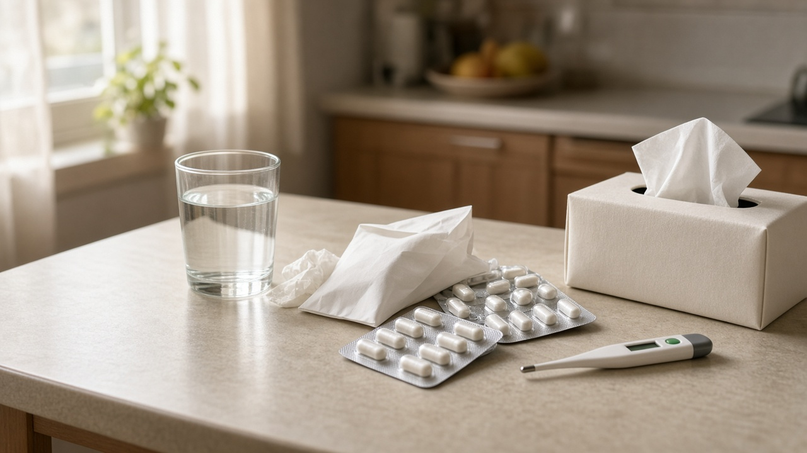
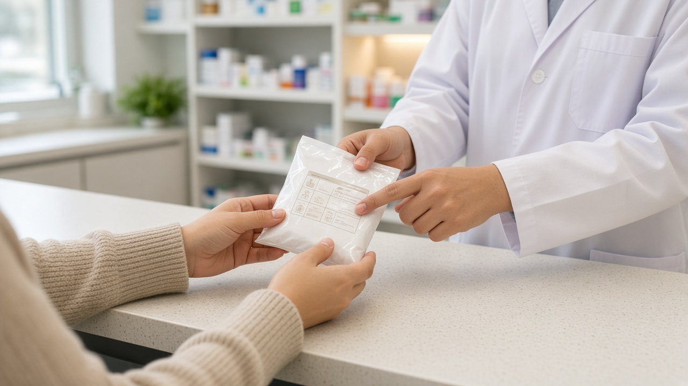

감기에 항생제 달라고 하기 전에, 10명 중 7명이 잘못 알고 있는 항생제 복용 습관

목이 칼칼하고 콧물이 나기 시작하면 병원에서 항생제를 받아야 빨리 낫는다고 생각하는 분들이 많아요.
또 며칠 먹고 증상이 좋아지면 남은 약은 서랍에 넣어 두고 다음에 아플 때 꺼내 먹기도 하지요.
질병관리청이 11월 18일부터 24일까지 이어지는 세계 항생제 내성 인식주간을 맞아 발표한 조사를 보면, 이런 습관이 생각보다 훨씬 흔했어요.
조사 결과가 무엇을 말해 주는지, 그리고 집에서 바로 지킬 수 있는 복용 수칙을 차례로 정리해 볼게요.
조사 결과로 본 우리의 항생제 상식
질병관리청과 문화체육관광부가 일반인 1,000명과 의사 1,000명을 대상으로 온라인 조사를 했어요.
일반인 가운데 항생제가 세균 감염 질환을 치료하는 약이라고 정확히 답한 비율은 26.4퍼센트에 그쳤어요.
반대로 항생제가 감기 치료에 도움이 된다고 잘못 알고 있는 비율은 71.4퍼센트로, 10명 중 7명꼴이었어요.
증상이 나아졌다고 처방받은 항생제를 스스로 끊어 본 적이 있다는 사람도 66.2퍼센트나 됐어요.
감기에 항생제가 듣지 않는 이유
항생제는 세균을 없애는 약이라서, 바이러스가 원인인 일반 감기에는 효과를 기대하기 어려워요.
질병관리청은 항생제 내성을 세균이 항생제에 버티게 되면서 약이 더 이상 제대로 듣지 않는 현상이라고 설명해요.
필요 없을 때 쓰거나 잘못 쓰는 일이 쌓이면 내성균이 늘어나고, 정말 세균 감염으로 아플 때 치료가 어려워질 수 있어요.
세계보건기구도 2019년에 항생제 내성을 인류가 맞닥뜨린 10대 공중보건 위협 가운데 하나로 꼽았어요.
내성균은 나만의 문제가 아니에요
같은 조사에서 항생제 내성균이 사람에서 사람으로 옮겨질 수 있다는 점을 잘 모르는 비율이 39퍼센트였어요.
고기나 우유 같은 식품, 식물과 생활 환경에도 항생제가 남아 있을 수 있다는 사실을 정확히 모르는 비율도 22.1퍼센트였어요.
그래서 올해 인식주간 주제는 사람, 동물, 식물, 식품, 환경의 건강이 모두 이어져 있다는 하나의 건강, 하나의 행동이에요.
농림축산식품부, 보건복지부, 식품의약품안전처 등 여러 부처가 함께 예방 포스터를 만들어 배포하는 것도 이 때문이에요.

집에서 지킬 항생제 복용 수칙 세 가지
첫 번째 수칙은 꼭 필요할 때만 쓰는 거예요. 감기 기운만으로 병원에서 항생제를 먼저 요구하지 말고 의사의 판단을 따르는 게 좋아요.
두 번째는 정해진 용법과 용량을 지키는 거예요. 하루 몇 번, 몇 알을 먹는지 약 봉투에 적힌 대로 지키면 돼요.
세 번째는 처방받은 만큼 끝까지 먹는 거예요. 중간에 좋아진 것 같아도 임의로 끊지 말고, 걱정되는 증상이 있으면 의사나 약사에게 먼저 물어보세요.
남은 항생제를 가족에게 나눠 주거나 다음에 아플 때 혼자 꺼내 먹는 것도 수칙에 어긋나니 피하는 게 좋아요.
학교와 병원에서도 함께 알려요
질병관리청은 교육부, 보건교사회와 함께 전국 초중고등학교에 가정통신문을 보내 집에서도 올바른 복용을 이야기하도록 돕기로 했어요.
서울에 있는 초등학교 5곳은 항생제 내성 예방 실천 시범학교로 정해져 학생과 교사 교육, 참여형 활동을 하게 돼요.
항생제 적정사용 관리 시범사업에 참여하는 의료기관에서도 환자와 보호자에게 포스터와 리플릿으로 수칙을 알려요.
포스터와 리플릿은 질병관리청 누리집 알림 자료의 홍보지 게시판과 항생제 내성 예방 홍보 메뉴에서 누구나 내려받을 수 있어요.
참고 자료 질병관리청 보도자료 2026년 11월 19일 조간 관계부처합동 나부터 바른 복용 다 함께 내성 예방, 대한민국 정책브리핑 2026년 11월 19일 카드뉴스, 질병관리청 항생제 내성 예방 홍보 누리집
태그 항생제 항생제내성 항생제복용 감기항생제 항생제내성예방 질병관리청 세계항생제내성인식주간 올바른약복용 내성균 건강정보